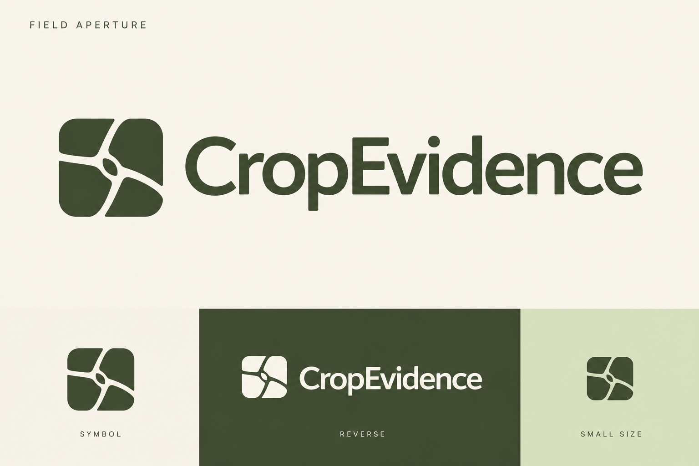
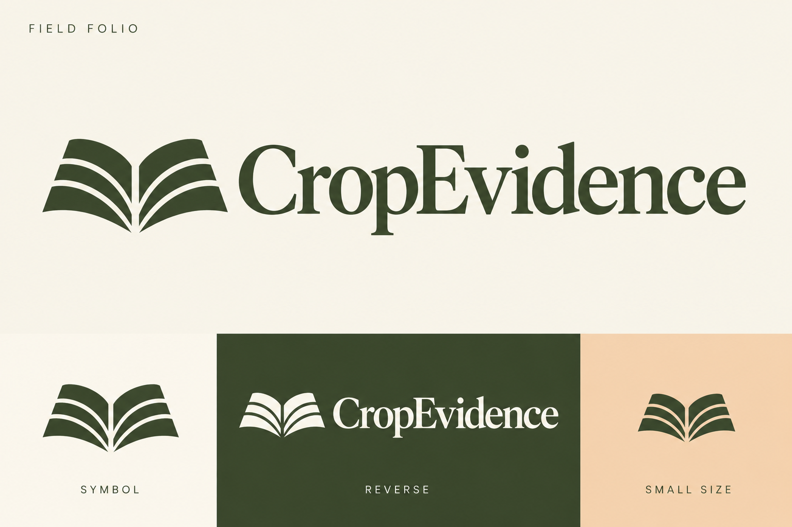
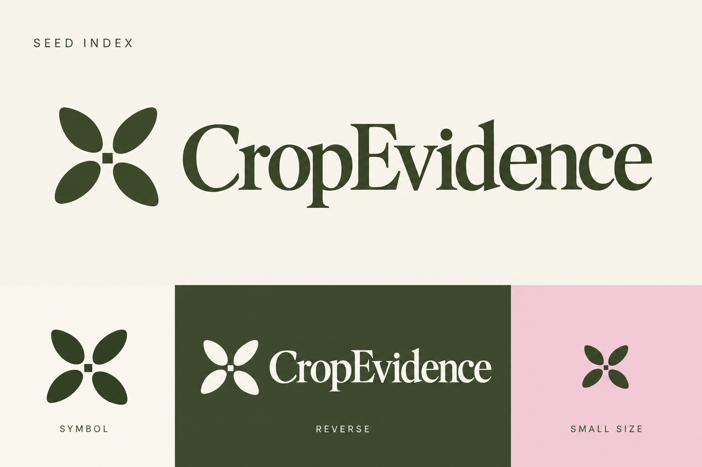

CropEvidence · More logo options
Round 2: three new identity explorations in displayed order. Each includes a wordmark, standalone symbol, reverse and small application. Generated raster concepts; final vector and favicon production follows selection.
Option 1

Option 2

Option 3

Created with built-in image generation. Exact prompts.